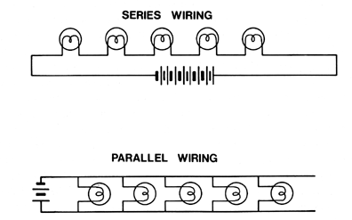

Fig. 527.09 Convergent Integration and Divergent Disintegration in the Language of Electricity: "Series" wiring is disintegrative, an open system. "Parallel" wiring is integrative, a closed system.
Copyright © 1997 Estate of R. Buckminster Fuller